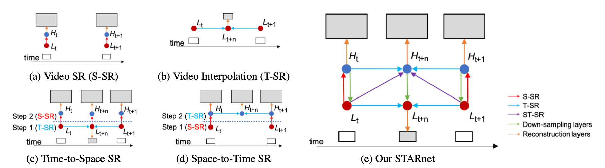
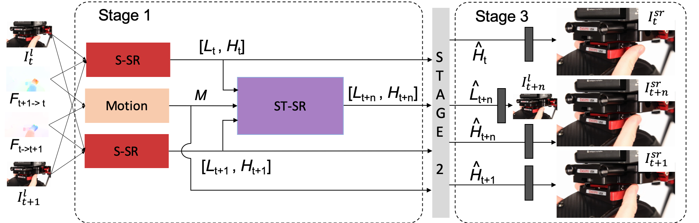
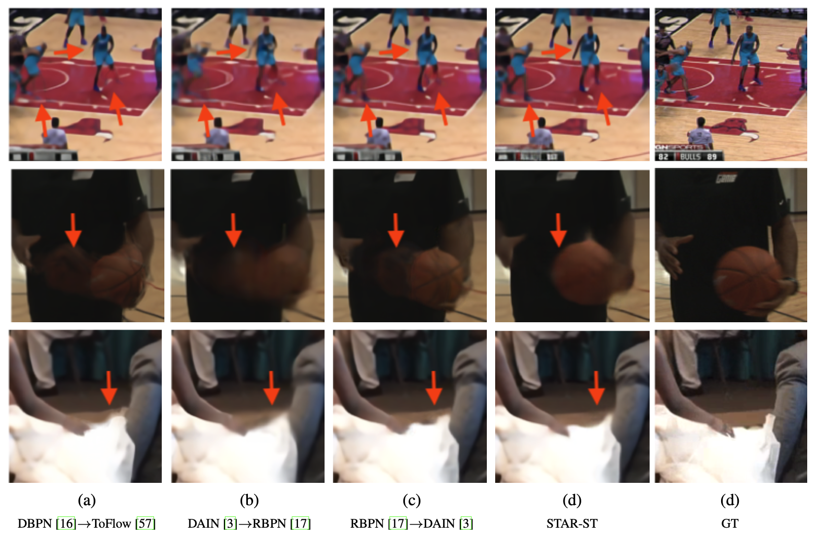

Space-Time-Aware Multi-Resolution Video Enhancement
Muhammad Haris,
Greg Shakhnarovich,
Norimichi Ukita

Abstract
We consider the problem of space-time super-resolution (ST-SR): increasing spatial resolution of video frames and simultaneously interpolating frames to increase the frame rate. Modern approaches handle these axes one at a time. In contrast, our proposed model called STARnet super-resolves jointly in space and time. This allows us to leverage mutually informative relationships between time and space: higher resolution can provide more detailed information about motion, and higher frame-rate can provide better pixel alignment. The components of our model that generate latent low- and high-resolution representations during ST-SR can be used to finetune a specialized mechanism for just spatial or just temporal SR. Experimental results demonstrate that STARnet improves the performances of space-time, spatial, and temporal video SR by substantial margins on publicly available datasets.

Manuscript
- CVPR2020 [pdf] [arXiv]
- Supplementary Material
Code
Results
Vimeo90k

Citation
Muhammad Haris, Greg Shakhnarovich, and Norimichi Ukita, "Space-Time-Aware Multi-Resolution Video Enhancement", Proc. of IEEE Conference on Computer Vision and Pattern Recognition (CVPR), 2020.